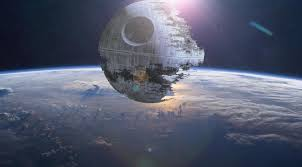
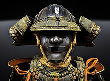

имя
Различные комбинации имен для персонажа были построены на фразе «Темная вода». Затем Лукас «добавил много фамилий, Вейдеров, Уилсонов и Смитов, и он просто придумал комбинацию Дарта и Вейдера». После выхода The Empire Strikes Back (1980), Лукас сказал , что имя Вейдер было основано на голландском языке немецкого омофонного Vater или Вейдер , что означает «отец», что делает имя представителя в «Dark Father»
Различные комбинации имен для персонажа были построены на фразе «Темная вода». Затем Лукас «добавил много фамилий, Вейдеров, Уилсонов и Смитов, и он просто придумал комбинацию Дарта и Вейдера». После выхода The Empire Strikes Back (1980), Лукас сказал , что имя Вейдер было основано на голландском языке немецкого омофонного Vater или Вейдер , что означает «отец», что делает имя представителя в «Dark Father»
поручение
Ему поручено вместе с Гранд Моффом Таркиным ( Питером Кушингом ) восстановить секретные планы супероружия Звезды Смерти , которые были похищены Альянсом Повстанцев . Вейдер захватывает и мучает принцессу Лейю ( Кэрри Фишер ), которая спрятала планы внутри дроида R2-D2 ( Кенни Бейкер ) и отправила его, чтобы найти бывшего мастера джедая Вейдера Оби-Вана Кеноби ( Алек Гиннесс) на планете Татуин.
Ему поручено вместе с Гранд Моффом Таркиным ( Питером Кушингом ) восстановить секретные планы супероружия Звезды Смерти , которые были похищены Альянсом Повстанцев . Вейдер захватывает и мучает принцессу Лейю ( Кэрри Фишер ), которая спрятала планы внутри дроида R2-D2 ( Кенни Бейкер ) и отправила его, чтобы найти бывшего мастера джедая Вейдера Оби-Вана Кеноби ( Алек Гиннесс) на планете Татуин.
дизайн
Оригинальный дизайн костюма Дарта Вейдера изначально не включал шлем. Идея, что Вейдер должен носить дыхательный аппарат, была впервые предложена концептуальным художником Ральфом МакКуарри во время обсуждений перед постановкой фильма « Звездные войны» с Джорджем Лукасом в 1975 году. МакКуарри заявил, что художественное руководство Лукаса состояло в том, чтобы изобразить злую фигуру в плаще с самурайскими доспехами .
Оригинальный дизайн костюма Дарта Вейдера изначально не включал шлем. Идея, что Вейдер должен носить дыхательный аппарат, была впервые предложена концептуальным художником Ральфом МакКуарри во время обсуждений перед постановкой фильма « Звездные войны» с Джорджем Лукасом в 1975 году. МакКуарри заявил, что художественное руководство Лукаса состояло в том, чтобы изобразить злую фигуру в плаще с самурайскими доспехами .


